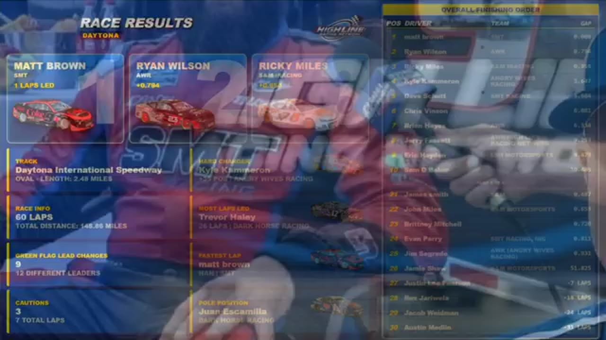

Ricky Miles
Team assignment not stated in the structured owner record.
A PODIUM FILE WITH AN OPEN RESULT HORIZON
- Official files
- 11
- Central editions
- 1
- Exact tape cues
- 7
- Accepted podiums
- 1
Ricky Miles has 1 position-specific top-three receipt: S1 R12 at Daytona (P3). No feature win is currently supported in the accepted result ledger. A consistently stated team affiliation remains open for owner review. The currently indexed source window runs from November 17, 2025 through February 17, 2026.
The official tape index connects the name to 11 race files, 1 Central edition, and 7 primary-broadcast navigation cues. The densest direct-tape categories are incident (3 cues) and stage (2 cues). Those counts describe where the name is easiest to find; they are not fault, pace, or performance grades. A source-attributed car frame is published with its original video and timestamp. That is the current discovery map for Ricky Miles.
That is enough for a real result dossier without pretending the archive knows every start or finish. Owner classifications can extend the record later through the same stable race IDs. Separately, 2 Highline Live files sit on the bonus shelf and never enter the official season ledger. The displayed name is labeled transcript normalized; that status remains visible so an owner roster can strengthen or correct the identity without rewriting the evidence trail. Those boundaries define Ricky Miles's public HLRN file.
7 featured race-tape cues
These are discovery routes into complete HLRN broadcasts, not performance grades or inferred results.
- S1 / R12 · STAGE
Stage 2 countdown at Daytona
S1 / R12 at 1:10:03: The broadcast enters a stage-scoring discussion at Daytona with Trevor Haley, Ricky Miles, and Matt Brown in the scoring call. The clip preserves the on-air timing or points call without promoting it into a complete stage result; the accepted feature result ledger remains separate.
Daytona - S1 / R5 · STAGE
Juan Escamilla collects the Watkins Glen stage
The stage-ending caution freezes Juan Escamilla at the scoring line. HLRN awards him the five stage points and reads Jacob Brown, Ricky Miles, Nick Bowman, and Trevor Haley behind him without extending that order to the feature.
Watkins Glen - S1 / R12 · INTERVIEW
Ricky Miles explains the race from the booth
S1 / R12 at 1:41:04: Ricky Miles, Brian Hebert, and Alex Leeball join the HLRN booth for a first-person race account. The interview is preserved as context and does not create a placement claim outside the accepted result ledger.
Daytona - S1 / R12 · STRATEGY
Fuel-only stops split the Daytona field
S1 / R12 at 1:11:51: Fuel-only calls split the pit cycle, with Randy Showers, Trevor Haley, Matt Brown, and Ricky Miles named in the sequence. The clip is a strategy receipt from the primary Daytona broadcast, not a reconstructed scoring sheet.
Daytona - S1 / R11 · INCIDENT
The Roval check catches an Evan Perry spin and more damage signals
Evan Perry spins in turn four before the live camera checks Jerry Fassett. HLRN then receives a Grant Wesley engine signal and finds Ricky Miles off line, preserving several separate developments rather than one shared incident.
Charlotte Roval - S1 / R11 · INCIDENT
Randy Switzer and Ricky Miles damage signals queue during a live battle
HLRN receives separate Randy Switzer and Ricky Miles crash signals but stays live with Joe Quan, Matt Brown, Jacob Brown, and Cory Cook racing for position. The caution arrives later, so the card does not merge the signals into one wreck.
Charlotte Roval - S1 / R5 · INCIDENT
Ricky Miles and Matt Brown surface in the Watkins Glen caution replay
S1 / R5 at 45:43: A multi-car incident centers the replay call on Ricky Miles, Matt Brown, Ryan Simmons, and Brian Hebert. This is a source-bounded incident window; it preserves what the booth reviews without assigning unsupported fault.
Watkins Glen
Recent editions connected to Ricky Miles
Verified team history is not consistently stated. Complete starts, finishes, and points remain open beyond the recovered results. Name normalization remains reviewable against owner records.